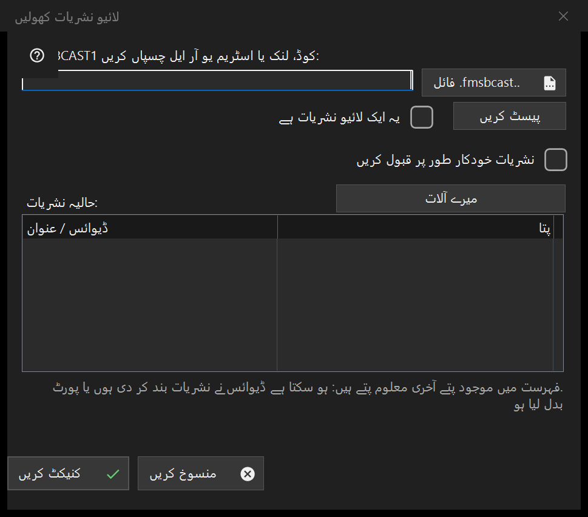

براہ راست نشریات
یہ کس مقصد کے لیے ہے
FMSBCAST1: کوڈ، لنک یا اسٹریم URL پیسٹ کریں یا .fmsbcast فائل منتخب کریں۔ عام URL کو صرف براہ راست ماخذ کے لیے لائیو نشان زد کریں؛ ورنہ وہ آن ڈیمانڈ میڈیا کے طور پر کھلے گا۔ جڑیں دبائیں اور مانگنے پر ناظر کا پاس ورڈ دیں۔ نشریات رکنے یا پورٹ بدلنے سے حالیہ پتہ ناکام ہو سکتا ہے۔ خودکار Cast قبول کرنا الگ واضح انتخاب ہے۔


اس ترتیب میں
FMSBCAST1: کوڈ، لنک یا اسٹریم URL پیسٹ کریں یا .fmsbcast فائل منتخب کریں۔ عام URL کو صرف براہ راست ماخذ کے لیے لائیو نشان زد کریں؛ ورنہ وہ آن ڈیمانڈ میڈیا کے طور پر کھلے گا۔ جڑیں دبائیں اور مانگنے پر ناظر کا پاس ورڈ دیں۔ نشریات رکنے یا پورٹ بدلنے سے حالیہ پتہ ناکام ہو سکتا ہے۔ خودکار Cast قبول کرنا الگ واضح انتخاب ہے۔
عناصر
FMSBCAST1: / .fmsbcast
FMSBCAST1: کوڈ، لنک یا اسٹریم URL پیسٹ کریں یا .fmsbcast فائل منتخب کریں۔ عام URL کو صرف براہ راست ماخذ کے لیے لائیو نشان زد کریں؛ ورنہ وہ آن ڈیمانڈ میڈیا کے طور پر کھلے گا۔ جڑیں دبائیں اور مانگنے پر ناظر کا پاس ورڈ دیں۔ نشریات رکنے یا پورٹ بدلنے سے حالیہ پتہ ناکام ہو سکتا ہے۔ خودکار Cast قبول کرنا الگ واضح انتخاب ہے۔
مینیجر کی ترتیبات · SFTP اشتراک کی ترتیبات · ایکسچینج سرور کی ترتیبات